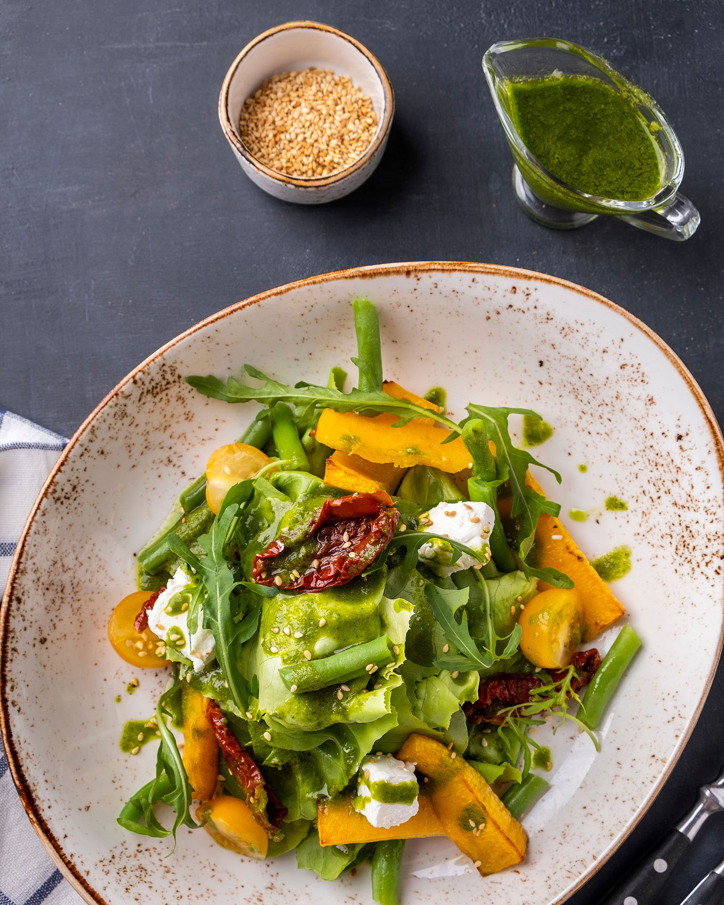

Πολύχρωμη σαλάτα με πετιμέζι

- Ανακατεύουμε σε σαλατιέρα το άσπρο και το κόκκινο λάχανο, το μαρούλι, τα καρότα και τους σπόρους ροδιού.
- Σε βαζάκι χτυπάμε το πετιμέζι με το ελαιόλαδο.
- Περιχύνουμε τη σαλάτα, αλατοπιπερώνουμε και σερβίρουμε.
Ντοματοσαλάτα με κρίταμο και ψητό κολοκύθι

- Σοτάρουμε το κολοκύθι σε 30 ml ελαιόλαδο για 3-4 λεπτά και αφήνουμε να κρυώσει.
- Σε πιατέλα ανακατεύουμε κολοκύθι, ντομάτες, αγγούρι, κρίταμο, ρίγανη, δυόσμο και αλάτι.
- Περιχύνουμε με ξίδι και το υπόλοιπο λάδι και σερβίρουμε.
Σαλάτα με πορτοκάλι, πράσα και ελιές

- Καθαρίζουμε τα πορτοκάλια από τη φλούδα και το άσπρο, τα κόβουμε σε λεπτές ροδέλες και τα στρώνουμε στην πιατέλα.
- Ψιλοκόβουμε το πράσο ή κόβουμε το κρεμμύδι σε κρίκους και τα σκορπίζουμε από πάνω.
- Αλατίζουμε, προσθέτουμε τις ελιές και ραντίζουμε με παρθένο ελαιόλαδο.
Σαλάτα με ρόκα και πεπόνι

- Πλένουμε καλά τη ρόκα, τη στεγνώνουμε, αφαιρούμε τα χοντρά κοτσάνια και την κόβουμε με το χέρι σε μεγάλα κομμάτια μέσα σε μια λεκάνη.
- Κόβουμε τις φέτες πεπονιού σε μεσαίους κύβους και τα προσθέτουμε στη λεκάνη με τη ρόκα.
- Σε ένα μούλτι ή σέικερ ρίχνουμε το ελαιόλαδο, το ξίδι της επιλογής μας και το μέλι και τα χτυπάμε καλά μέχρι να ομογενοποιηθούν και να φτιάξουμε ένα παχύρρευστο ντρέσινγκ.
- Περιχύνουμε τη σαλάτα με το ντρέσινγκ, αλατοπιπερώνουμε με φρεσκοτριμμένο πιπέρι και λίγο αλάτι, και ανακατεύουμε απαλά με τα χέρια ή με δύο κουτάλια για να μην πληγώσουμε τη ρόκα.
- Σερβίρουμε τη σαλάτα αμέσως σε πιατέλα ή μπολ, συνοδεύοντας προαιρετικά με παξιμάδια ή κριτσίνια.
Caesars Salad
- Ψήνουμε τις φέτες μπαγκέτας με λάδι, σκόρδο, αλάτι, πιπέρι και ρίγανη.
- Κόβουμε μαρούλι, κρεμμυδάκια και φιλέτα κοτόπουλου.
- Πολτοποιούμε αντζούγιες, ανακατεύουμε με κρόκο, σκόρδο, μουστάρδα, λεμόνι και ρίχνουμε λάδι σιγά σιγά.
- Ανακατεύουμε σαλάτα, κρουτόν, κοτόπουλο, σως και παρμεζάνα.
Βίδες σαλάτα µε ψητά λαχανικά

- Σε ταψί απλώνουμε πιπεριές, κολοκύθι, μελιτζάνα και κρεμμύδι κομμένα σε καρέ. Ραντίζουμε με ελαιόλαδο, ξίδι και αλατίζουμε. Ψήνουμε σε προθερμασμένο φούρνο στους 180°C για 20 λεπτά.
- Βράζουμε τις βίδες σε άφθονο αλατισμένο νερό, τις στραγγίζουμε και τις κρυώνουμε ελαφρά.
- Ανακατεύουμε τις βίδες με τα ψητά λαχανικά, προσθέτουμε τις ντομάτες σε κυβάκια, τη φέτα και τον ψιλοκομμένο βασιλικό.
- Σερβίρουμε αμέσως ή φυλάμε στο ψυγείο.
 Spoon Theory
Spoon Theory